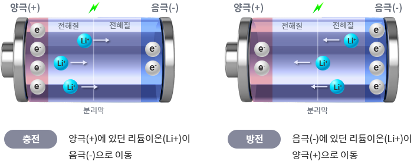
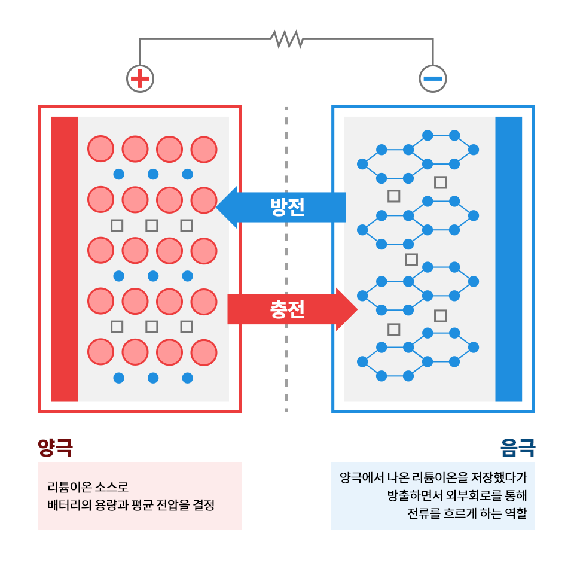

이차전지 기본 개념
이차전지란?
이차전지는 충전과 방전이 반복적으로 이루어지는 전지를 말합니다. 대표적인 예로 리튬이온전지, 니켈수소전지, 납산전지 등이 있습니다.
주요 특징
- 충전이 가능하여 재사용이 가능
- 에너지 밀도가 높아 장시간 사용 가능
- 환경적 영향이 상대적으로 적음
- 수명이 길어 경제적 이점이 있음
리튬이온전지
리튬이온전지는 현재 가장 널리 사용되는 이차전지로, 휴대폰, 노트북, 전기차 등에 폭넓게 활용되고 있습니다.
장점
- 높은 에너지 밀도
- 충전 소요시간이 짧음
- 수명이 길음
- 메모리 효과가 없음
구조
리튬이온전지는 양극, 음극, 분리막, 전해질로 구성되어 있으며, 리튬 이온이 양극과 음극 사이를 왕복하면서 전기를 발생시킵니다.
이차전지의 종류
1. 리튬이온전지
- 리튬코발트산화물
- 리튬니켈망간코발트산화물(NMC)
- 리튬철인산염(LFP)
2. 납산전지
- 가정용 전기 자전거
- UPS 시스템
- 전기차 초기 모델
3. 니켈수소전지
- 하이브리드 자동차
- 위성
- 공업용 장비
이차전지의 작동 원리
충전 과정
외부 전원으로부터 양극에 전자가 유입되고, 이로 인해 리튬 이온이 음극으로 이동합니다.
방전 과정
리튬 이온이 양극으로 이동하면서 전자가 외부 회로를 통해 이동하여 전기를 발생시킵니다.
안전성
과충전, 과방전, 과열 등을 방지하기 위해 BMS(Battery Management System)가 탑재되어 있습니다.